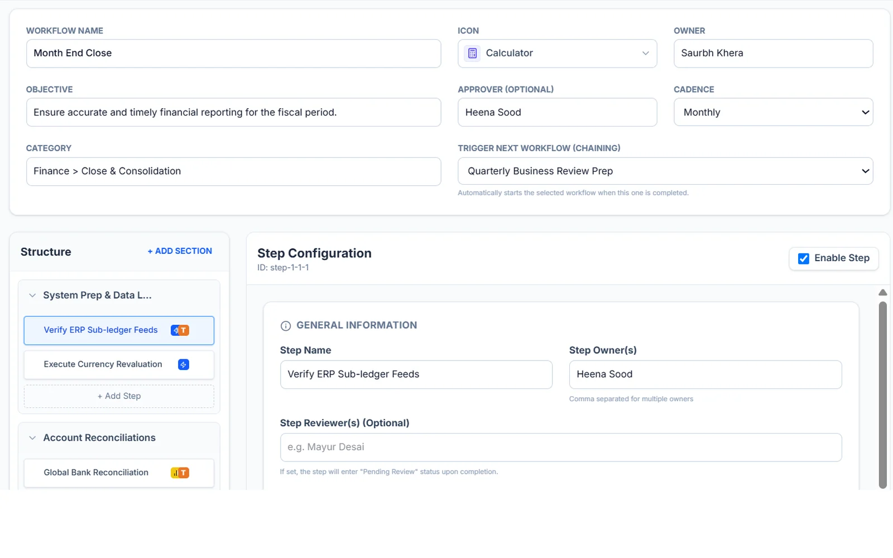
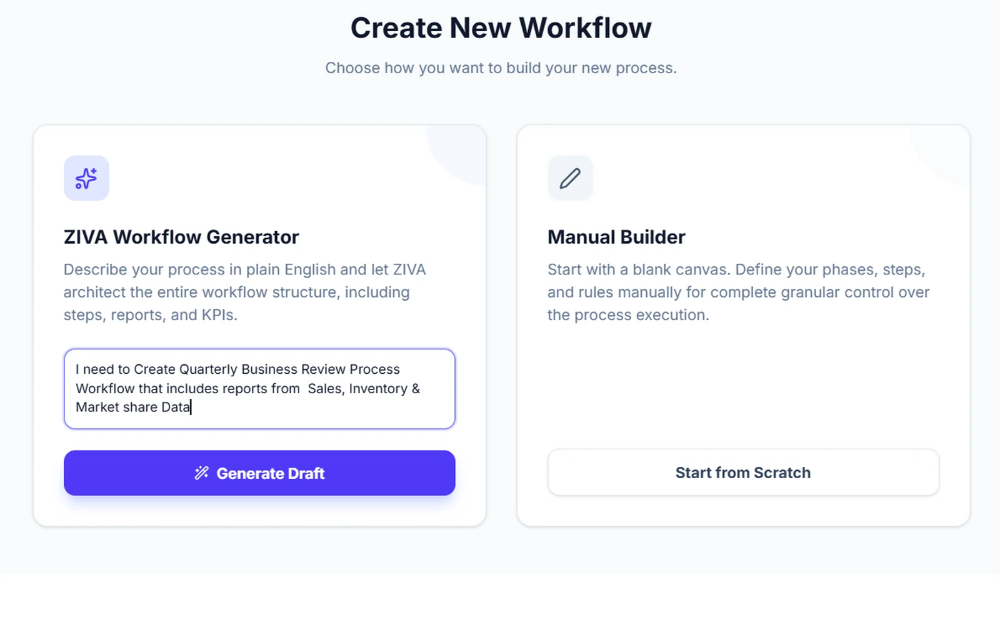
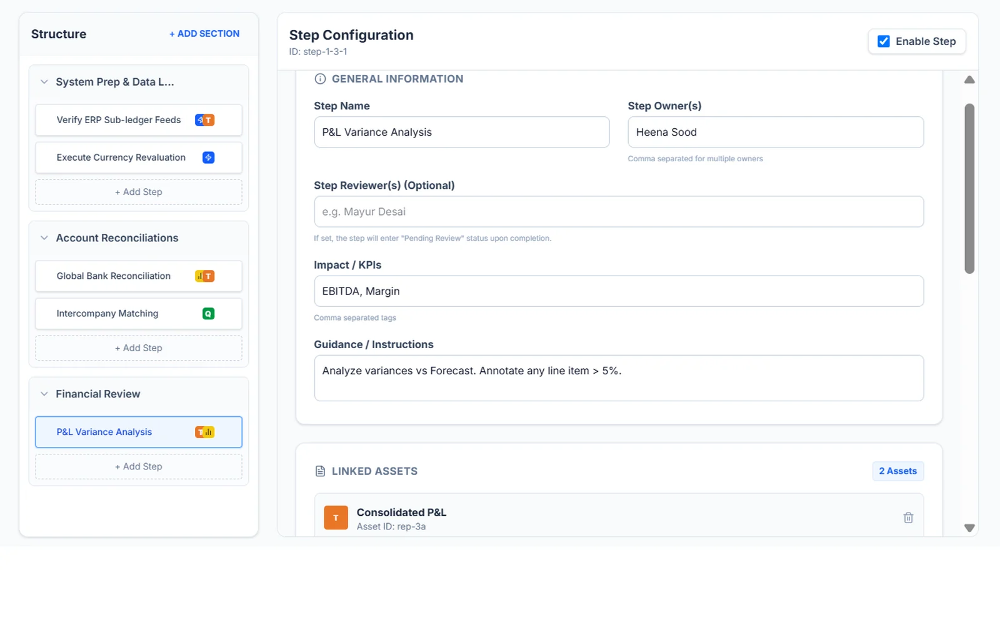
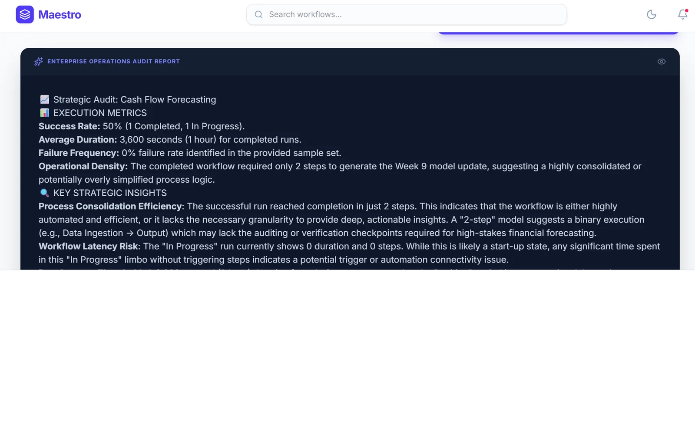
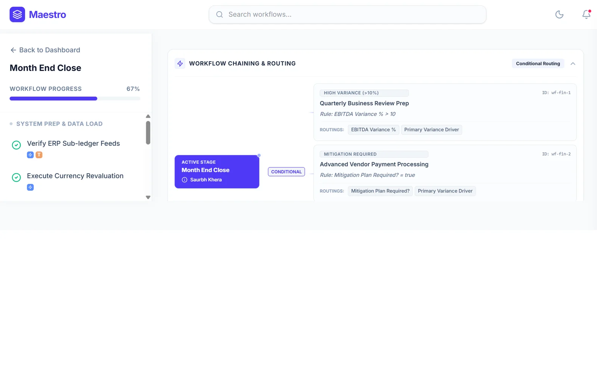

Maestro | Act
Govern how analytics-driven decisions are made
Maestro connects trusted analytics to the business workflows that use them. Define what people and AI agents do, set where reviews and approvals are required, and keep a record of the evidence and decisions captured in the workflow.

Example workflows
- Month-end close
- Cash flow forecasting
- Quarterly business review preparation
- Contract review and approval
- Quarterly demand planning
- Payroll audit
When decisions are spread across tools, the evidence is hard to reconstruct
Reports, recommendations, and approvals often sit in different places. Maestro brings them into a workflow that shows what was reviewed, who was responsible, and what the team decided.
-
Inconsistent steps
Define the sequence and assign responsibility so teams can follow the same process each time.
-
Unclear review requirements
Define where agent work needs a person’s review and where a decision requires approval.
-
Scattered decision evidence
Link the relevant analytics and capture the reviews and decisions made in the workflow.
Governed AI execution for your business processes
Build workflows with defined steps, owners, and review points. Link the relevant reports or KPIs from Atlas so participants can review the same evidence where they need it.
Define where AI agents participate
Assign supported tasks to AI agents within a workflow. Specify what the agent is expected to do and where a person must review or approve the result before the workflow moves on.
A process in Maestro moves through four stages
-
Build
Start with a template, use the manual builder, or describe the process to ZIVA to generate a draft for your team to review.
-
Assign
Define owners, reviewers, and the analytics needed at relevant steps.
-
Execute
Carry out the workflow with people and AI agents, applying the configured reviews and approvals.
-
Trace
Review the evidence, actions, and decisions captured during the run.
In a quarterly demand planning review, a planning lead reviews booking attainment and the booking trend using linked reports. If the figures indicate underbooking risk, the team reviews mitigation options and records its decision and approval in the workflow.
Start from a template or draft a workflow with ZIVA
Browse the library by business function, or build a workflow from scratch. Describe your process to ZIVA to generate a draft with proposed steps and decision points. Review the draft and configure the process before using it.

Set review and approval requirements where they matter
Define which steps need review or approval and link the analytics reviewers should use. Configure the conditions a step must meet before it can move forward.

Review agent work before approving the next step
Where a workflow requires human approval, reviewers can assess the agent’s output alongside the linked analytics before approving it or requesting changes.

See what informed a decision
Use the workflow record to review the analytics, actions, and approvals captured during a run. See which evidence informed the decision, who reviewed it, and what the team decided.

Who uses Maestro
Workflow owners
Design processes, assign responsibilities, link relevant analytics, and define where review or approval is required.
Participants and reviewers
Use My Workflows to see assigned work and identify steps that require review or approval.
Decisions that teams can repeat and trace
- Give teams a consistent process for recurring decisions.
- Connect decisions recorded in the workflow to the relevant analytics and approvals.
- Use AI agents for defined tasks with human review where the workflow requires it.
One platform, three layers
Atlas catalogs and governs the reports and KPIs teams rely on. Nexus adds business definitions and relationships AI can use. Maestro brings that analytics foundation into workflows with defined responsibilities, review points, and decision records.
-
Atlas | Know
Catalog, certify, and govern reports, dashboards, and KPIs.
-
Nexus | Understand
Give AI the definitions and relationships it needs to interpret analytics.
-
You are here
Maestro | Act
Run governed workflows and capture how decisions were made.
See a governed workflow in action
Walk through a recurring business process, from the reports that inform it to the review, approval, and decision record.